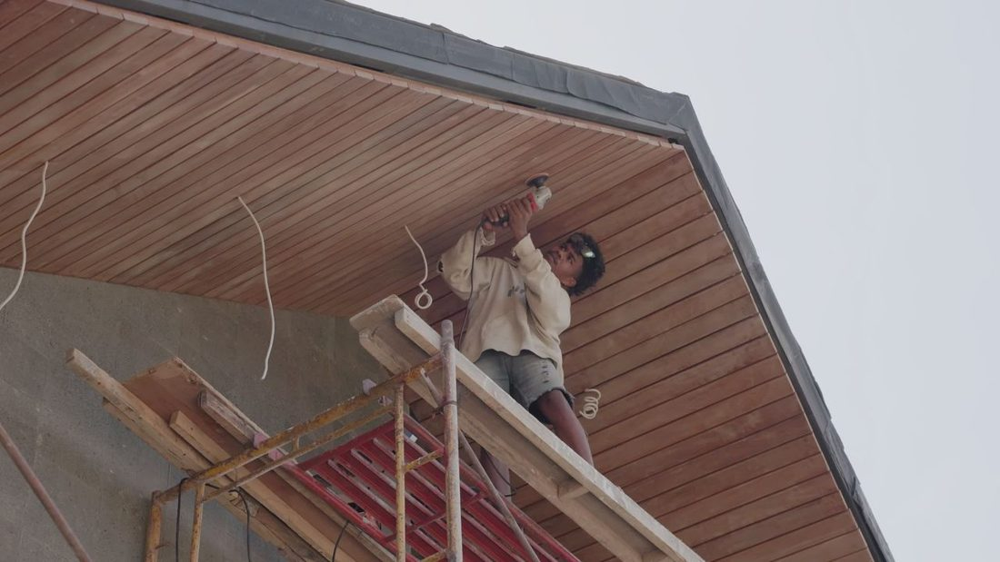

Soffit services
Soffit and Fascia Services
Two soffit services, and the fascia board they meet at the roof edge. All handled in-house by the same licensed crew.
-

Soffit Installation
New soffit that keeps bugs and critters out and gives the attic more ventilation.
Read more -

Soffit Repair
From simple patching to complete replacement, with water‑resistant materials where they help.
Read more -

Fascia Board
The board your gutter hangs on, replaced while it is still holding rather than after.
Read more
- 1Drip edge
- 2Fascia board
- 3Soffit
- 4Soffit vent
What it does
What a Soffit Does
Soffit is the word for the underside of any structure. On a house, it is the boards along the underside of the roof’s overhang.
- Keeps bugs and animals out of the attic.
- Adds attic ventilation, which cuts moisture buildup and energy costs.
- Finishes the look of the house, in a range of colors and styles.
- Helps the roof last longer by protecting it from the elements.
Materials
Soffit Materials We Install
Vinyl, wood or aluminum, in a variety of colors and styles, matched to the house and the budget.
Vinyl
Comes in a variety of colors and styles, holds up to the weather, and won’t rot or decay.
Wood
Widely used and durable, with good insulation, and it can be painted any color.
Aluminum
Durable and lightweight, in a variety of colors, and it won’t rust or decay.
How it runs
How a Soffit Repair Runs
Three steps, from the first look to a clean site.
-
Inspection
We inspect the exterior and the soffit to find every damaged or weak section.
-
Repair or Replace
Depending on how bad the damage is, a repair or a full replacement.
-
Clean-Up
Once the work is done, the crew cleans up so everything is left neat.
Before you call
Soffit Questions
Short answers to what people ask first. For anything else, call (504) 226-7070.
What Is a Soffit?
What Is the Difference Between Soffit and Fascia?
Does Soffit Help Ventilate the Attic?
Can Damaged Soffit Be Repaired Instead of Replaced?
Working on the Whole Roof?
Soffits are part of the roof system. See every residential roofing service, from repair to full replacement.